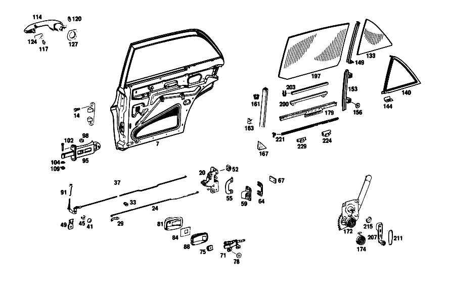

| № | Артикул | Название | Кол. | Примечание | Ограничение |
|---|---|---|---|---|---|
| 7 | A 108 730 26 05 | ОСТОВ ДВЕРИ | 1 | СПРАВА [003] 016 FROM CHASSIS 032903; 018 FROM CHASSIS 033679 | |
| 14 | A 108 990 01 22 | болт | 0 | ||
| 14 | A 108 990 01 22 | - болт | 4 | REAR DOORS TO CENTRAL PILLAR HINGES [008] 012 FROM CHASSIS 000081; 014 FROM CHASSIS 000024; 015 FROM CHASSIS 000015 | |
| 20 | A 115 730 02 35 | ЗАМОК ДВЕРИ | 1 | СПРАВА [044] 014,10/50,20/60 FROM CHASSIS 052236, ALSO INSTALLED ON, SEE FOOTNOTE 43; 12/52,22/62 FROM CHASSIS 051888, ALSO INSTALLED ON, SEE FOOTNOTE 43 [043] 051802, 051817, 051873- 051876, 051878, 051879, 051925, 051994, 051996- 051998, 052001, 052020, 052104- 052109, 052135, 052136, 052138- 052145, 052199- 052201, 052204- 052207, 052224- 052228. [010] 012,10/50,20/60 FROM CHASSIS 068090; 12/52,22/62 FROM CHASSIS 067638; 015 FROM CHASSIS 002715 | |
| 24 | A 108 730 07 92 | ПРИВОДНАЯ ШТАНГА | 2 | СЛЕВА [010] 012,10/50,20/60 FROM CHASSIS 068090; 12/52,22/62 FROM CHASSIS 067638; 015 FROM CHASSIS 002715 [050] 016 UP TO CHASSIS 081847; 018 UP TO CHASSIS 087991; 057,058 UP TO CHASSIS 004038 | |
| 29 | A 100 994 01 60 | предохранитель | 2 | ||
| 33 | A 002 988 83 78 | Скоба | - | ||
| 33 | A 006 988 63 78 | Скоба | 2 | ||
| 37 | A 108 730 06 93 | ПРЕДОХР. БЛОКИР. ДВЕРИ | 1 | СПРАВА | |
| 41 | N 900055 008002 | - Пружинная шайба | 2 | ||
| 45 | A 120 991 04 35 | - ДИСТАНЦИОННОЕ КОЛЬЦО | 2 | ||
| 49 | A 000 990 39 91 | CAGE NUT | 2 | ||
| 52 | A 000 990 83 91 | ГАЙКОДЕРЖАТЕЛЬ | - | ||
| 52 | A 000 990 71 91 | Гайкодержатель | 8 | ||
| 55 | A 108 723 02 24 | ОБРАМЛЕНИЕ | 1 | СПРАВА | |
| 59 | A 115 720 06 04 | Скоба замка | 1 | СПРАВА | |
| 64 | A 100 723 03 11 | ПЛАСТИНА | NB | [044] 014,10/50,20/60 FROM CHASSIS 052236, ALSO INSTALLED ON, SEE FOOTNOTE 43; 12/52,22/62 FROM CHASSIS 051888, ALSO INSTALLED ON, SEE FOOTNOTE 43 [043] 051802, 051817, 051873- 051876, 051878, 051879, 051925, 051994, 051996- 051998, 052001, 052020, 052104- 052109, 052135, 052136, 052138- 052145, 052199- 052201, 052204- 052207, 052224- 052228. [010] 012,10/50,20/60 FROM CHASSIS 068090; 12/52,22/62 FROM CHASSIS 067638; 015 FROM CHASSIS 002715 [012] 012 UP TO CHASSIS 074648 EXCEPT FOR 074496-074504 | |
| 67 | A 115 637 00 11 | ПЛАСТИНА | 4 | ||
| 71 | A 108 760 06 61 | Управление | 1 | СПРАВА [017] 012 UP TO CHASSIS 073924; 016 UP TO CHASSIS 019231; 018 UP TO CHASSIS 018812; 019 UP TO CHASSIS 019325 | |
| 75 | A 000 990 83 91 | ГАЙКОДЕРЖАТЕЛЬ | - | ||
| 75 | A 000 990 71 91 | Гайкодержатель | 4 | ||
| 78 | A 000 994 05 10 | Диск | 4 | ||
| 81 | A 108 766 06 11 | Ковшовая платформа | 1 | СПРАВА [019] 012 FROM CHASSIS 054878, ALSO INSTALLED ON, SEE GROUP 72 FOOTNOTE 12; 014 FROM CHASSIS 043156, ALSO INSTALLED ON, SEE GROUP 72 FOOTNOTE 13; 015 FROM CHASSIS 002581 | |
| 88 | A 108 766 04 90 | Вставка | 1 | СПРАВА [019] 012 FROM CHASSIS 054878, ALSO INSTALLED ON, SEE GROUP 72 FOOTNOTE 12; 014 FROM CHASSIS 043156, ALSO INSTALLED ON, SEE GROUP 72 FOOTNOTE 13; 015 FROM CHASSIS 002581 | |
| 91 | A 110 760 05 65 | ПРЕДОХРАНИТЕЛЬНАЯ ГОЛОВКА | 2 | ||
| 95 | A 108 730 00 16 | DOOR CHECK | 2 | ||
| 98 | A 000 984 07 58 | - РОЛИК | - | ||
| 98 | A 314 723 00 68 | - Ролик | 4 | ||
| 102 | A 108 991 00 07 | Палец | 2 | ОГРАНИЧИТЕЛЬ ХОДА ДВЕРИ НА ЦЕНТРАЛЬНОЙ СТОЙКЕ | |
| 104 | A 108 990 01 40 | Диск | NB | ОГРАНИЧИТЕЛЬ ХОДА ДВЕРИ НА ЦЕНТРАЛЬНОЙ СТОЙКЕ | |
| 109 | A 000 994 05 51 | ПРЕДОХРАНИТЕЛЬ | - | ||
| 114 | A 108 760 08 59 | РУЧКА ДВЕРИ | 1 | СНАРУЖИ СПРАВА [022] 012 FROM CHASSIS 044562; 014 FROM CHASSIS 035569; 015 FROM CHASSIS 002425 | |
| 117 | A 120 766 00 15 | - БОЛТ | 2 | [402] БОЛЬШЕ НЕ ПОСТАВЛЯЕТСЯ | |
| 120 | A 111 993 00 26 | ПРУЖИНА ДИСКОВАЯ | 2 | РУЧКА ДВЕРИ НА ДВЕРИ | |
| 124 | A 108 766 09 05 | ПОДКЛАДКА | 2 | [022] 012 FROM CHASSIS 044562; 014 FROM CHASSIS 035569; 015 FROM CHASSIS 002425 | |
| 127 | A 108 766 12 05 | ПОДКЛАДКА | 1 | СЗАДИ СПРАВА [022] 012 FROM CHASSIS 044562; 014 FROM CHASSIS 035569; 015 FROM CHASSIS 002425 | |
| 133 | A 108 735 02 09 | Стекло | 1 | СПРАВА | |
| 140 | A 108 735 04 24 | УПЛОТНИТЕЛЬ | 1 | СПРАВА | |
| 144 | A 000 988 39 78 | Скоба | 4 | [402] БОЛЬШЕ НЕ ПОСТАВЛЯЕТСЯ [023] 012 UP TO CHASSIS 034408; 014 UP TO CHASSIS 027889; 015 UP TO CHASSIS 002203 | |
| 149 | A 108 730 04 19 | ПОПЕРЕЧИНА ОКНА | 1 | СПРАВА [024] 016 UP TO CHASSIS 032902; 018 UP TO CHASSIS 033678; 019 UP TO CHASSIS 040075 | |
| 153 | A 108 730 02 15 | FE. САЛАЗКИ | 1 | СПРАВА | |
| 156 | A 000 994 05 10 | Диск | 4 | ||
| 161 | A 000 985 29 30 | Направляющая | 2 | ЗАКАЗЫВАТЬ ПОГОННЫМИ МЕТРАМИ 2180 MM | |
| 163 | A 002 988 23 78 | Скоба | 12 | ||
| 167 | A 108 725 00 98 | УПЛОТНИТЕЛЬ | - | ||
| 167 | A 115 725 12 98 | УПЛОТНИТЕЛЬ | - | ||
| 167 | A 116 725 01 98 | Уплотнение | 4 | ||
| 172 | A 108 735 04 02 | Стеклоподъемник | 1 | СПРАВА [029] 016 FROM CHASSIS 047185; 018 FROM CHASSIS 049844; 019 FROM CHASSIS 051514 | |
| 174 | A 000 768 09 05 | - Компенсационная пружина | - | ||
| 174 | A 000 768 07 34 | - пружина | 2 | ||
| 179 | A 108 730 06 45 | FE.ПОДЪЕМНАЯ ПЛАНКА | 1 | СПРАВА | |
| 197 | A 108 735 02 10 | Стекло | 1 | ДЛЯ ПРАВОГО ОПУСКНОГО СТЕКЛА | |
| 200 | A 110 720 00 47 | ПЛАНКА КРЕПЕЖНАЯ | 2 | ||
| 203 | A 001 987 42 57 | Уплотнитель стекла | 2 | ЗАКАЗЫВАТЬ ПОГОННЫМИ МЕТРАМИ 340mm [404] ЗАКАЗЫВАТЬ ПОГОННЫМИ МЕТРАМИ | |
| 207 | A 110 760 04 02 | КРИВОШИП | 2 | [030] 012 UP TO CHASSIS 055059 EXCEPT FOR, SEE GROUP 72 FOOTNOTE 12; 014 UP TO CHASSIS 043268 EXCEPT FOR, SEE GROUP 72 FOOTNOTE 13; 015 UP TO CHASSIS 002575 | |
| 211 | A 110 768 01 95 | ОБИВКА | 2 | [028] 016 UP TO CHASSIS 047184; 018 UP TO CHASSIS 049843; 019 UP TO CHASSIS 051513 [032] STATE COLOR AND CHASSIS NUMBERS WHEN ORDERING | |
| 215 | A 108 768 01 13 | Дистанционная шайба | 2 | ||
| 221 | A 115 725 09 65 | Уплотнительная планка | 1 | ВНУТРИ И СНАРУЖИ 2000 MM | |
| 224 | A 108 988 03 78 | Скоба | 8 | ||
| 229 | A 108 988 02 78 | СКОБА | - | ||
| 234 | A 108 730 14 51 | Обшивка | 1 | СПЕРЕДИ СПРАВА | |
| 239 | A 000 985 09 62 | Диск | 4 | ||
| 243 | A 108 730 16 51 | Обшивка | 1 | СВЕРХУ СПРАВА | |
| 249 | A 108 730 10 51 | Обшивка | - | ||
| 249 | A 108 730 20 51 | Обшивка | 1 | СПРАВА [032] STATE COLOR AND CHASSIS NUMBERS WHEN ORDERING | |
| 254 | A 108 725 00 70 | - Декоративное кольцо | 2 | ||
| 257 | A 001 988 28 78 | - СКОБА | - | ||
| 257 | A 002 988 45 78 | - Скоба | 8 | ||
| 266 | A 111 727 52 90 | ШУМОИЗОЛЯЦИЯ | - | ||
| 266 | A 123 727 00 90 | ШУМОИЗОЛЯЦИЯ | - | ||
| 266 | A 110 727 03 90 | Шумоизол. двери водителя | - | ||
| 266 | A 210 682 00 08 | Шумоизоляция двери | - | [409] ПРИ МОНТАЖЕ ПОДОГНАТЬ ПО МЕСТУ | |
| 266 | A 168 682 03 08 | Демпфирование | 2 | ||
| 272 | A 108 730 06 78 | Уплотнительная рамка | 1 | СПРАВА | |
| 276 | A 108 730 04 97 | ЗАЩИТА КРОМОК | 1 | СПРАВА | |
| 281 | A 108 737 04 31 | Уплотнение | 1 | ЦЕНТР. СТОЙКА СПРАВА | |
| 285 | A 108 730 56 70 | Обшивка | 1 | СПРАВА [032] STATE COLOR AND CHASSIS NUMBERS WHEN ORDERING | |
| 289 | A 002 988 45 78 | - Скоба | 12 | ||
| 293 | A 003 988 41 78 | - Клипса обшивки | - | ||
| 293 | A 008 988 57 78 | - СКОБА | - | ||
| 293 | A 010 988 61 78 | - СКОБА | 12 | ||
| 298 | A 108 737 00 82 | - МОЛДИНГ | 2 | [016] 012 UP TO CHASSIS 054877 EXCEPT FOR, SEE GROUP 72 FOOTNOTE 12; 014 UP TO CHASSIS 043155 EXCEPT FOR, SEE GROUP 72 FOOTNOTE 13; 015 UP TO CHASSIS 002580 | |
| 304 | A 108 737 00 72 | - ПЛАНКА | 2 | [016] 012 UP TO CHASSIS 054877 EXCEPT FOR, SEE GROUP 72 FOOTNOTE 12; 014 UP TO CHASSIS 043155 EXCEPT FOR, SEE GROUP 72 FOOTNOTE 13; 015 UP TO CHASSIS 002580 | |
| 310 | A 000 994 22 45 | - ПРЕДОХРАНИТЕЛЬ | 6 | [016] 012 UP TO CHASSIS 054877 EXCEPT FOR, SEE GROUP 72 FOOTNOTE 12; 014 UP TO CHASSIS 043155 EXCEPT FOR, SEE GROUP 72 FOOTNOTE 13; 015 UP TO CHASSIS 002580 | |
| 316 | A 108 738 02 31 | МОЛДИНГ | 1 | СПЕРЕДИ СПРАВА | |
| 321 | A 108 738 01 80 | Уплотнение | 2 | ||
| 325 | A 108 738 04 31 | Декоративный элемент | 1 | СВЕРХУ СПРАВА | |
| 331 | A 108 738 02 30 | Декоративный элемент | 1 | НА КРАЮ БОРТА СПРАВА | |
| 337 | A 108 728 02 97 | Промежуточная прокладка | 12 | ||
| 349 | A 108 730 06 85 | - ОКАНТОВКА | 1 | СПРАВА [036] 012 UP TO CHASSIS 072966; 016 UP TO CHASSIS 011936; 018 UP TO CHASSIS 010466 | |
| 355 | A 000 988 43 81 | - Кнопка-застежка | 14 | [037] 019 UP TO CHASSIS 010646 [036] 012 UP TO CHASSIS 072966; 016 UP TO CHASSIS 011936; 018 UP TO CHASSIS 010466 | |
| 362 | A 108 738 04 97 | - ПОДКЛАДКА | 1 | СПРАВА [036] 012 UP TO CHASSIS 072966; 016 UP TO CHASSIS 011936; 018 UP TO CHASSIS 010466 | |
| 367 | A 108 730 20 80 | Декоративный элемент | 1 | BEADED EDGE,RIGHT [038] 012 FROM CHASSIS 072967; 016 FROM CHASSIS 011937; 018 FROM CHASSIS 010467 | |
| 373 | A 108 730 08 85 | - ОКАНТОВКА | 1 | СПРАВА [038] 012 FROM CHASSIS 072967; 016 FROM CHASSIS 011937; 018 FROM CHASSIS 010467 | |
| 378 | A 000 988 15 81 | Крепежная втулка | - | ||
| 378 | A 001 988 20 81 | КНОПКА НАЖИМНАЯ | - | ||
| 378 | A 008 997 03 81 | КАБ. ВТУЛКА | - | ||
| 378 | A 001 988 20 81 | КНОПКА НАЖИМНАЯ | - | ||
| 378 | A 001 988 76 81 | Кнопка-застежка | 14 | НИЖНЯЯ ДЕТАЛЬ | |
| A 108 730 03 05 | ОСТОВ ДВЕРИ | - | [001] 016 UP TO CHASSIS 019231; 018 UP TO CHASSIS 018812 | ||
| A 108 730 21 05 | ОСТОВ ДВЕРИ | - | [002] 016 FROM CHASSIS 019232-032902; 018 FROM CHASSIS 018813-033678 | ||
| A 108 730 25 05 | ОСТОВ ДВЕРИ | 1 | СЛЕВА [003] 016 FROM CHASSIS 032903; 018 FROM CHASSIS 033679 | ||
| A 108 730 04 05 | ОСТОВ ДВЕРИ | - | [001] 016 UP TO CHASSIS 019231; 018 UP TO CHASSIS 018812 | ||
| A 108 730 22 05 | ОСТОВ ДВЕРИ | - | [002] 016 FROM CHASSIS 019232-032902; 018 FROM CHASSIS 018813-033678 | ||
| A 108 730 14 05 | ОСТОВ ДВЕРИ | - | [002] 016 FROM CHASSIS 019232-032902; 018 FROM CHASSIS 018813-033678 | ||
| A 108 733 01 41 | ШАРНИР | 1 | СВЕРХУ СЛЕВА [007] 012 UP TO CHASSIS 000080; 014 UP TO CHASSIS 000023; 015 UP TO CHASSIS 000014 | ||
| A 108 733 02 41 | ШАРНИР | 1 | СВЕРХУ СПРАВА [007] 012 UP TO CHASSIS 000080; 014 UP TO CHASSIS 000023; 015 UP TO CHASSIS 000014 | ||
| A 108 990 00 22 | БОЛТ | - | |||
| A 108 990 01 22 | болт | 4 | ПЕТЛЯ НА КРЫЛЕ ДВЕРИ [007] 012 UP TO CHASSIS 000080; 014 UP TO CHASSIS 000023; 015 UP TO CHASSIS 000014 | ||
| A 108 733 01 42 | ШАРНИР | 1 | ВНИЗУ СЛЕВА [007] 012 UP TO CHASSIS 000080; 014 UP TO CHASSIS 000023; 015 UP TO CHASSIS 000014 | ||
| A 108 733 02 42 | ШАРНИР | 1 | СНИЗУ СПРАВА [007] 012 UP TO CHASSIS 000080; 014 UP TO CHASSIS 000023; 015 UP TO CHASSIS 000014 | ||
| A 108 990 00 22 | БОЛТ | - | |||
| A 108 990 01 22 | болт | 4 | ПЕТЛЯ НА КРЫЛЕ ДВЕРИ [007] 012 UP TO CHASSIS 000080; 014 UP TO CHASSIS 000023; 015 UP TO CHASSIS 000014 | ||
| A 108 723 00 52 | ПАЛЕЦ ШАРНИРА | 2 | ЗАДН. ДВЕРЬ НА ЦЕНТР. СТОЙКЕ [007] 012 UP TO CHASSIS 000080; 014 UP TO CHASSIS 000023; 015 UP TO CHASSIS 000014 | ||
| N 070616 010001 | Гайка | 2 | ЗАДН. ДВЕРЬ НА ЦЕНТР. СТОЙКЕ [007] 012 UP TO CHASSIS 000080; 014 UP TO CHASSIS 000023; 015 UP TO CHASSIS 000014 | ||
| A 108 990 00 22 | БОЛТ | - | |||
| A 110 730 11 35 | ЗАМОК ДВЕРИ | 1 | СЛЕВА [042] 014,10/50,20/60 BIS FGST 052235 MIT AUSNAHME VON, SIEHE FUSSNOTE 43; 12/52,22/62 BIS FGST 051887 MIT AUSNAHME VON, SIEHE FUSSNOTE 43 [043] 051802, 051817, 051873- 051876, 051878, 051879, 051925, 051994, 051996- 051998, 052001, 052020, 052104- 052109, 052135, 052136, 052138- 052145, 052199- 052201, 052204- 052207, 052224- 052228. [009] 012,10/50,20/60 UP TO CHASSIS 068089; 12/52,22/62 UP TO CHASSIS 067637; 015 UP TO CHASSIS 002714 | ||
| A 110 730 12 35 | ЗАМОК ДВЕРИ | 1 | СПРАВА [042] 014,10/50,20/60 BIS FGST 052235 MIT AUSNAHME VON, SIEHE FUSSNOTE 43; 12/52,22/62 BIS FGST 051887 MIT AUSNAHME VON, SIEHE FUSSNOTE 43 [043] 051802, 051817, 051873- 051876, 051878, 051879, 051925, 051994, 051996- 051998, 052001, 052020, 052104- 052109, 052135, 052136, 052138- 052145, 052199- 052201, 052204- 052207, 052224- 052228. [009] 012,10/50,20/60 UP TO CHASSIS 068089; 12/52,22/62 UP TO CHASSIS 067637; 015 UP TO CHASSIS 002714 | ||
| A 115 730 01 35 | ЗАМОК ДВЕРИ | 1 | СЛЕВА [044] 014,10/50,20/60 FROM CHASSIS 052236, ALSO INSTALLED ON, SEE FOOTNOTE 43; 12/52,22/62 FROM CHASSIS 051888, ALSO INSTALLED ON, SEE FOOTNOTE 43 [043] 051802, 051817, 051873- 051876, 051878, 051879, 051925, 051994, 051996- 051998, 052001, 052020, 052104- 052109, 052135, 052136, 052138- 052145, 052199- 052201, 052204- 052207, 052224- 052228. [010] 012,10/50,20/60 FROM CHASSIS 068090; 12/52,22/62 FROM CHASSIS 067638; 015 FROM CHASSIS 002715 | ||
| A 108 730 00 92 | ПРИВОДНАЯ ШТАНГА | 2 | [042] 014,10/50,20/60 BIS FGST 052235 MIT AUSNAHME VON, SIEHE FUSSNOTE 43; 12/52,22/62 BIS FGST 051887 MIT AUSNAHME VON, SIEHE FUSSNOTE 43 [043] 051802, 051817, 051873- 051876, 051878, 051879, 051925, 051994, 051996- 051998, 052001, 052020, 052104- 052109, 052135, 052136, 052138- 052145, 052199- 052201, 052204- 052207, 052224- 052228. [009] 012,10/50,20/60 UP TO CHASSIS 068089; 12/52,22/62 UP TO CHASSIS 067637; 015 UP TO CHASSIS 002714 | ||
| A 108 730 05 92 | ПРИВОДНАЯ ШТАНГА | - | [415] ПРИМЕЧ. ПО ЗАМЕНЕ ПРИМЕНИМО ТОЛЬКО ДЛЯ СТОЯЩИХ РЯДОМ ПОЗИЦИЙ [050] 016 UP TO CHASSIS 081847; 018 UP TO CHASSIS 087991; 057,058 UP TO CHASSIS 004038 | ||
| A 108 730 08 92 | ПРИВОДНАЯ ШТАНГА | 2 | СПРАВА [044] 014,10/50,20/60 FROM CHASSIS 052236, ALSO INSTALLED ON, SEE FOOTNOTE 43; 12/52,22/62 FROM CHASSIS 051888, ALSO INSTALLED ON, SEE FOOTNOTE 43 [043] 051802, 051817, 051873- 051876, 051878, 051879, 051925, 051994, 051996- 051998, 052001, 052020, 052104- 052109, 052135, 052136, 052138- 052145, 052199- 052201, 052204- 052207, 052224- 052228. [051] 016 FROM CHASSIS 081848; 018 FROM CHASSIS 087992; 057,058 FROM CHASSIS 004039 | ||
| A 120 987 01 37 | ФИТИНГ | - | |||
| A 108 730 01 93 | ПРЕДОХР. БЛОКИР. ДВЕРИ | - | |||
| A 108 730 03 93 | ПРЕДОХР. БЛОКИР. ДВЕРИ | - | |||
| A 108 730 05 93 | ПРЕДОХР. БЛОКИР. ДВЕРИ | 1 | СЛЕВА | ||
| A 108 730 02 93 | ПРЕДОХР. БЛОКИР. ДВЕРИ | - | |||
| A 108 730 04 93 | ПРЕДОХР. БЛОКИР. ДВЕРИ | - | |||
| A 120 987 01 37 | - ФИТИНГ | - | |||
| A 100 994 01 60 | - предохранитель | 2 | |||
| N 000923 006005 | - Винт | 2 | |||
| A 100 994 01 60 | - предохранитель | 2 | [011] 012 UP TO CHASSIS 058277; 014 UP TO CHASSIS 045416; 015 UP TO CHASSIS 002589 | ||
| A 002 988 83 78 | Скоба | - | |||
| A 006 988 63 78 | Скоба | 4 | |||
| A 000 990 41 91 | ГАЙКОДЕРЖАТЕЛЬ | - | [014] 016 UP TO CHASSIS 063042; 018,019 UP TO CHASSIS 068469 | ||
| A 000 990 33 30 | Болт с потайной головкой | 4 | |||
| N 007988 006124 | БОЛТ | 4 | |||
| A 108 723 01 24 | Окаймление | 1 | СЛЕВА | ||
| N 007988 004103 | БОЛТ | 4 | EDGING TO DOOR | ||
| A 108 720 03 04 | ПЕТЛЯ | 1 | СЛЕВА [042] 014,10/50,20/60 BIS FGST 052235 MIT AUSNAHME VON, SIEHE FUSSNOTE 43; 12/52,22/62 BIS FGST 051887 MIT AUSNAHME VON, SIEHE FUSSNOTE 43 [043] 051802, 051817, 051873- 051876, 051878, 051879, 051925, 051994, 051996- 051998, 052001, 052020, 052104- 052109, 052135, 052136, 052138- 052145, 052199- 052201, 052204- 052207, 052224- 052228. [009] 012,10/50,20/60 UP TO CHASSIS 068089; 12/52,22/62 UP TO CHASSIS 067637; 015 UP TO CHASSIS 002714 | ||
| A 108 720 04 04 | Скоба замка | 1 | СПРАВА [042] 014,10/50,20/60 BIS FGST 052235 MIT AUSNAHME VON, SIEHE FUSSNOTE 43; 12/52,22/62 BIS FGST 051887 MIT AUSNAHME VON, SIEHE FUSSNOTE 43 [043] 051802, 051817, 051873- 051876, 051878, 051879, 051925, 051994, 051996- 051998, 052001, 052020, 052104- 052109, 052135, 052136, 052138- 052145, 052199- 052201, 052204- 052207, 052224- 052228. [009] 012,10/50,20/60 UP TO CHASSIS 068089; 12/52,22/62 UP TO CHASSIS 067637; 015 UP TO CHASSIS 002714 | ||
| A 115 720 01 04 | ПЕТЛЯ | - | [044] 014,10/50,20/60 FROM CHASSIS 052236, ALSO INSTALLED ON, SEE FOOTNOTE 43; 12/52,22/62 FROM CHASSIS 051888, ALSO INSTALLED ON, SEE FOOTNOTE 43 [043] 051802, 051817, 051873- 051876, 051878, 051879, 051925, 051994, 051996- 051998, 052001, 052020, 052104- 052109, 052135, 052136, 052138- 052145, 052199- 052201, 052204- 052207, 052224- 052228. [010] 012,10/50,20/60 FROM CHASSIS 068090; 12/52,22/62 FROM CHASSIS 067638; 015 FROM CHASSIS 002715 [012] 012 UP TO CHASSIS 074648 EXCEPT FOR 074496-074504 | ||
| A 115 720 05 04 | Скоба замка | 1 | СЛЕВА | ||
| A 115 720 02 04 | ПЕТЛЯ | - | [044] 014,10/50,20/60 FROM CHASSIS 052236, ALSO INSTALLED ON, SEE FOOTNOTE 43; 12/52,22/62 FROM CHASSIS 051888, ALSO INSTALLED ON, SEE FOOTNOTE 43 [043] 051802, 051817, 051873- 051876, 051878, 051879, 051925, 051994, 051996- 051998, 052001, 052020, 052104- 052109, 052135, 052136, 052138- 052145, 052199- 052201, 052204- 052207, 052224- 052228. [010] 012,10/50,20/60 FROM CHASSIS 068090; 12/52,22/62 FROM CHASSIS 067638; 015 FROM CHASSIS 002715 [012] 012 UP TO CHASSIS 074648 EXCEPT FOR 074496-074504 | ||
| A 115 720 05 04 | Скоба замка | 1 | СЛЕВА [033] 018,10/50,20/60 FROM CHASSIS 030202; 12/52,22/62 FROM CHASSIS 030428, ALSO INSTALLED ON 023019-023126; 019,10/50,20/60 FROM CHASSIS 030343; 12/52,22/62 FROM CHASSIS 030428 [015] 012 FROM CHASSIS 074649, ALSO INSTALLED ON 074496-074504; 016,10/50,20/60 FROM CHASSIS 029342; 12/52,22/62 FROM CHASSIS 029603, ALSO INSTALLED ON 022855-023172 | ||
| A 115 720 06 04 | Скоба замка | 1 | СПРАВА [033] 018,10/50,20/60 FROM CHASSIS 030202; 12/52,22/62 FROM CHASSIS 030428, ALSO INSTALLED ON 023019-023126; 019,10/50,20/60 FROM CHASSIS 030343; 12/52,22/62 FROM CHASSIS 030428 [015] 012 FROM CHASSIS 074649, ALSO INSTALLED ON 074496-074504; 016,10/50,20/60 FROM CHASSIS 029342; 12/52,22/62 FROM CHASSIS 029603, ALSO INSTALLED ON 022855-023172 | ||
| A 100 723 02 11 | Компенсационная пластина | NB | [044] 014,10/50,20/60 FROM CHASSIS 052236, ALSO INSTALLED ON, SEE FOOTNOTE 43; 12/52,22/62 FROM CHASSIS 051888, ALSO INSTALLED ON, SEE FOOTNOTE 43 [043] 051802, 051817, 051873- 051876, 051878, 051879, 051925, 051994, 051996- 051998, 052001, 052020, 052104- 052109, 052135, 052136, 052138- 052145, 052199- 052201, 052204- 052207, 052224- 052228. [010] 012,10/50,20/60 FROM CHASSIS 068090; 12/52,22/62 FROM CHASSIS 067638; 015 FROM CHASSIS 002715 [012] 012 UP TO CHASSIS 074648 EXCEPT FOR 074496-074504 | ||
| A 115 723 05 11 | ПЛАСТИНА | NB | [402] БОЛЬШЕ НЕ ПОСТАВЛЯЕТСЯ [033] 018,10/50,20/60 FROM CHASSIS 030202; 12/52,22/62 FROM CHASSIS 030428, ALSO INSTALLED ON 023019-023126; 019,10/50,20/60 FROM CHASSIS 030343; 12/52,22/62 FROM CHASSIS 030428 [015] 012 FROM CHASSIS 074649, ALSO INSTALLED ON 074496-074504; 016,10/50,20/60 FROM CHASSIS 029342; 12/52,22/62 FROM CHASSIS 029603, ALSO INSTALLED ON 022855-023172 | ||
| A 115 723 06 11 | Компенсационная пластина | NB | [033] 018,10/50,20/60 FROM CHASSIS 030202; 12/52,22/62 FROM CHASSIS 030428, ALSO INSTALLED ON 023019-023126; 019,10/50,20/60 FROM CHASSIS 030343; 12/52,22/62 FROM CHASSIS 030428 [015] 012 FROM CHASSIS 074649, ALSO INSTALLED ON 074496-074504; 016,10/50,20/60 FROM CHASSIS 029342; 12/52,22/62 FROM CHASSIS 029603, ALSO INSTALLED ON 022855-023172 | ||
| A 000 990 33 30 | Болт с потайной головкой | 8 | |||
| A 108 760 01 61 | РУЧКА ВНУТРЕННЯЯ | - | |||
| A 108 760 05 61 | Внутренняя ручка | 1 | СЛЕВА [017] 012 UP TO CHASSIS 073924; 016 UP TO CHASSIS 019231; 018 UP TO CHASSIS 018812; 019 UP TO CHASSIS 019325 | ||
| A 108 760 02 61 | РУЧКА ВНУТРЕННЯЯ | - | |||
| A 115 760 01 61 | РУЧКА ВНУТРЕННЯЯ | 1 | СЛЕВА [050] 016 UP TO CHASSIS 081847; 018 UP TO CHASSIS 087991; 057,058 UP TO CHASSIS 004038 [018] 012 FROM CHASSIS 073925; 016 FROM CHASSIS 019232; 018 FROM CHASSIS 018813; 019 FROM CHASSIS 019326 | ||
| A 115 760 05 61 | Внутренняя ручка | 1 | СЛЕВА [051] 016 FROM CHASSIS 081848; 018 FROM CHASSIS 087992; 057,058 FROM CHASSIS 004039 | ||
| A 115 760 02 61 | РУЧКА ВНУТРЕННЯЯ | 1 | СПРАВА [050] 016 UP TO CHASSIS 081847; 018 UP TO CHASSIS 087991; 057,058 UP TO CHASSIS 004038 [018] 012 FROM CHASSIS 073925; 016 FROM CHASSIS 019232; 018 FROM CHASSIS 018813; 019 FROM CHASSIS 019326 | ||
| A 115 760 06 61 | Управление | 1 | СПРАВА [051] 016 FROM CHASSIS 081848; 018 FROM CHASSIS 087992; 057,058 FROM CHASSIS 004039 | ||
| N 007985 006132 | Винт | 4 | [402] БОЛЬШЕ НЕ ПОСТАВЛЯЕТСЯ | ||
| A 000 990 41 91 | ГАЙКОДЕРЖАТЕЛЬ | - | |||
| A 100 994 01 60 | предохранитель | 2 | |||
| A 108 766 03 11 | РОЗЕТКА | - | [016] 012 UP TO CHASSIS 054877 EXCEPT FOR, SEE GROUP 72 FOOTNOTE 12; 014 UP TO CHASSIS 043155 EXCEPT FOR, SEE GROUP 72 FOOTNOTE 13; 015 UP TO CHASSIS 002580 | ||
| A 108 766 04 11 | РОЗЕТКА | - | [016] 012 UP TO CHASSIS 054877 EXCEPT FOR, SEE GROUP 72 FOOTNOTE 12; 014 UP TO CHASSIS 043155 EXCEPT FOR, SEE GROUP 72 FOOTNOTE 13; 015 UP TO CHASSIS 002580 | ||
| A 108 766 05 11 | Ковшовая платформа | 1 | СЛЕВА [019] 012 FROM CHASSIS 054878, ALSO INSTALLED ON, SEE GROUP 72 FOOTNOTE 12; 014 FROM CHASSIS 043156, ALSO INSTALLED ON, SEE GROUP 72 FOOTNOTE 13; 015 FROM CHASSIS 002581 | ||
| N 007987 004119 | БОЛТ | 2 | SHELL TYPE HANDLE TO MOUNTING PLATE | ||
| N 006797 004333 | Зубчатая шайба | 2 | |||
| A 108 766 01 90 | ВСТАВКА | 1 | СЛЕВА [016] 012 UP TO CHASSIS 054877 EXCEPT FOR, SEE GROUP 72 FOOTNOTE 12; 014 UP TO CHASSIS 043155 EXCEPT FOR, SEE GROUP 72 FOOTNOTE 13; 015 UP TO CHASSIS 002580 | ||
| A 108 766 02 90 | ВСТАВКА | 1 | СПРАВА [016] 012 UP TO CHASSIS 054877 EXCEPT FOR, SEE GROUP 72 FOOTNOTE 12; 014 UP TO CHASSIS 043155 EXCEPT FOR, SEE GROUP 72 FOOTNOTE 13; 015 UP TO CHASSIS 002580 | ||
| A 108 766 03 90 | Вставка | 1 | СЛЕВА [019] 012 FROM CHASSIS 054878, ALSO INSTALLED ON, SEE GROUP 72 FOOTNOTE 12; 014 FROM CHASSIS 043156, ALSO INSTALLED ON, SEE GROUP 72 FOOTNOTE 13; 015 FROM CHASSIS 002581 | ||
| A 108 990 02 40 | ШАЙБА | NB | ОГРАНИЧИТЕЛЬ ХОДА ДВЕРИ НА ЦЕНТРАЛЬНОЙ СТОЙКЕ | ||
| N 912001 006000 | Механический фиксатор | - | |||
| N 912001 006002 | Механический фиксатор | 2 | ОГРАНИЧИТЕЛЬ ХОДА ДВЕРИ НА ЦЕНТРАЛЬНОЙ СТОЙКЕ; 6MM | ||
| N 000933 006102 | Винт | - | |||
| N 304017 006016 | Винт с 6-гранной головкой | 4 | ДЕРЖАТЕЛЬ ДВЕРИ НА ЗАДН. ДВЕРИ; M6X16 | ||
| A 094 990 68 10 | Пружинное кольцо | 4 | ДЕРЖАТЕЛЬ ДВЕРИ НА ЗАДН. ДВЕРИ | ||
| N 000934 006007 | Гайка | 2 | ДЕРЖАТЕЛЬ ДВЕРИ НА ЗАДН. ДВЕРИ | ||
| N 009021 006103 | Шайба | - | |||
| N 009021 006208 | Шайба | 2 | ДЕРЖАТЕЛЬ ДВЕРИ НА ЗАДН. ДВЕРИ; 6 MM | ||
| N 006797 006145 | Зубчатая шайба | 2 | ДЕРЖАТЕЛЬ ДВЕРИ НА ЗАДН. ДВЕРИ | ||
| A 108 766 09 02 | РУЧКА ДВЕРИ | 1 | СНАРУЖИ СЛЕВА [021] 012 UP TO CHASSIS 044561; 014 UP TO CHASSIS 035568; 015 UP TO CHASSIS 002424 | ||
| A 108 766 10 02 | РУЧКА ДВЕРИ | 1 | СНАРУЖИ СПРАВА [021] 012 UP TO CHASSIS 044561; 014 UP TO CHASSIS 035568; 015 UP TO CHASSIS 002424 | ||
| A 108 760 07 59 | РУЧКА ДВЕРИ | 1 | СНАРУЖИ СЛЕВА [022] 012 FROM CHASSIS 044562; 014 FROM CHASSIS 035569; 015 FROM CHASSIS 002425 | ||
| N 007985 006149 | Винт | - | |||
| N 007985 006580 | Винт | 2 | РУЧКА ДВЕРИ НА ДВЕРИ | ||
| A 108 766 01 05 | ПОДКЛАДКА | - | |||
| A 108 766 02 05 | ПОДКЛАДКА | 1 | СПЕРЕДИ СЛЕВА [021] 012 UP TO CHASSIS 044561; 014 UP TO CHASSIS 035568; 015 UP TO CHASSIS 002424 | ||
| A 108 766 02 05 | ПОДКЛАДКА | 1 | СПЕРЕДИ СПРАВА [021] 012 UP TO CHASSIS 044561; 014 UP TO CHASSIS 035568; 015 UP TO CHASSIS 002424 | ||
| A 108 766 07 05 | Подкладка | 1 | СЗАДИ СЛЕВА [021] 012 UP TO CHASSIS 044561; 014 UP TO CHASSIS 035568; 015 UP TO CHASSIS 002424 | ||
| A 108 766 08 05 | ПОДКЛАДКА | 1 | СЗАДИ СПРАВА [021] 012 UP TO CHASSIS 044561; 014 UP TO CHASSIS 035568; 015 UP TO CHASSIS 002424 | ||
| A 108 766 11 05 | ПОДКЛАДКА | 1 | СЗАДИ СЛЕВА [022] 012 FROM CHASSIS 044562; 014 FROM CHASSIS 035569; 015 FROM CHASSIS 002425 | ||
| A 108 735 01 09 | Стекло | 1 | СЛЕВА | ||
| A 108 735 01 24 | УПЛОТНИТЕЛЬ | - | |||
| A 108 735 03 24 | УПЛОТНИТЕЛЬ | 1 | СЛЕВА | ||
| A 108 735 02 24 | УПЛОТНИТЕЛЬ | - | |||
| A 108 730 01 19 | ПОПЕРЕЧИНА ОКНА | - | |||
| A 108 730 03 19 | ПОПЕРЕЧИНА ОКНА | 1 | СЛЕВА [024] 016 UP TO CHASSIS 032902; 018 UP TO CHASSIS 033678; 019 UP TO CHASSIS 040075 | ||
| A 108 730 02 19 | ПОПЕРЕЧИНА ОКНА | - | |||
| N 007981 004243 | Шуруп | - | |||
| N 000000 002062 | Шуруп | 2 | |||
| N 009021 004108 | Шайба | - | |||
| A 094 990 63 08 | Шайба | 2 | |||
| N 007981 004243 | Шуруп | - | |||
| N 000000 002062 | Шуруп | 4 | |||
| N 009021 004108 | Шайба | - | |||
| A 094 990 63 08 | Шайба | 4 | |||
| A 002 989 41 85 | КЛЕЙКАЯ ЛЕНТА | 1 | ЗАКАЗЫВАТЬ ПОГОННЫМИ МЕТРАМИ [026] 012 FROM CHASSIS 023774; 014 FROM CHASSIS 019899; 015 FROM CHASSIS 001638 [027] 016 UP TO CHASSIS 027622; 018,019 UP TO CHASSIS 028985 | ||
| A 108 730 01 15 | FE. САЛАЗКИ | 1 | СЛЕВА | ||
| N 000933 006122 | Винт | - | |||
| N 304017 006034 | Винт с 6-гранной головкой | 4 | |||
| A 094 990 68 10 | Пружинное кольцо | 4 | |||
| A 000 985 20 30 | ПРОФИЛЬ ГЕРМЕТИЗИРУЮЩИЙ | - | |||
| A 108 735 01 02 | СТЕКЛОПОДЪЕМНИК | - | [028] 016 UP TO CHASSIS 047184; 018 UP TO CHASSIS 049843; 019 UP TO CHASSIS 051513 | ||
| A 108 735 03 02 | Стеклоподъемник | 1 | СЛЕВА [029] 016 FROM CHASSIS 047185; 018 FROM CHASSIS 049844; 019 FROM CHASSIS 051514 | ||
| A 108 735 02 02 | СТЕКЛОПОДЪЕМНИК | - | [028] 016 UP TO CHASSIS 047184; 018 UP TO CHASSIS 049843; 019 UP TO CHASSIS 051513 | ||
| A 000 768 01 05 | - ПРУЖИНА | - | |||
| A 108 730 01 45 | FE.ПОДЪЕМНАЯ ПЛАНКА | - | |||
| A 108 730 05 45 | FE.ПОДЪЕМНАЯ ПЛАНКА | 1 | СЛЕВА | ||
| A 108 730 02 45 | FE.ПОДЪЕМНАЯ ПЛАНКА | - | |||
| A 113 984 00 37 | ПОЛЗУН | - | |||
| A 000 984 24 56 | Диск | - | [415] ПРИМЕЧ. ПО ЗАМЕНЕ ПРИМЕНИМО ТОЛЬКО ДЛЯ СТОЯЩИХ РЯДОМ ПОЗИЦИЙ | ||
| A 000 990 05 48 | Диск | - | |||
| A 000 994 03 60 | ПРЕДОХРАНИТЕЛЬ | - | |||
| A 115 586 00 72 | РЕМКОМПЛЕКТ | - | |||
| A 123 720 01 14 | Ремк-т стеклоподъемника | 1 | СТЕКЛОПОДЪЕМНИК | ||
| N 000933 006122 | Винт | - | |||
| N 304017 006034 | Винт с 6-гранной головкой | 8 | СТЕКЛОПОДЪЕМН. НА ЗАДН. ДВЕРИ | ||
| A 094 990 68 10 | Пружинное кольцо | 8 | СТЕКЛОПОДЪЕМН. НА ЗАДН. ДВЕРИ | ||
| A 108 735 01 10 | ЗАЩИТНОЕ СТЕКЛО | 1 | ДЛЯ ЛЕВОГО ОПУСКНОГО СТЕКЛА | ||
| N 000933 006122 | Винт | - | |||
| N 304017 006034 | Винт с 6-гранной головкой | 4 | ПОДВИЖ.СТЕКЛО НА ШИНЕ СТЕКЛОПОД. | ||
| N 006797 006145 | Зубчатая шайба | 4 | ПОДВИЖ.СТЕКЛО НА ШИНЕ СТЕКЛОПОД. | ||
| A 108 760 01 02 | КРИВОШИП | - | |||
| A 123 760 01 02 | Кривошип | 2 | [028] 016 UP TO CHASSIS 047184; 018 UP TO CHASSIS 049843; 019 UP TO CHASSIS 051513 [031] 012 FROM CHASSIS 055060, ALSO INSTALLED ON, SEE GROUP 72 FOOTNOTE 12; 014 FROM CHASSIS 043269, ALSO INSTALLED ON, SEE GROUP, 72 FOOTNOTE 13; 015 FROM CHASSIS 002576 | ||
| A 108 760 02 02 | КРИВОШИП | - | |||
| N 007987 004135 | БОЛТ | 2 | ПОВОРОТНАЯ РУЧКА К МЕХАНИЗМУ КРИВОШИПНОГО ПРИВОДА [028] 016 UP TO CHASSIS 047184; 018 UP TO CHASSIS 049843; 019 UP TO CHASSIS 051513 | ||
| N 006797 004333 | Зубчатая шайба | 2 | ПОВОРОТНАЯ РУЧКА К МЕХАНИЗМУ КРИВОШИПНОГО ПРИВОДА [028] 016 UP TO CHASSIS 047184; 018 UP TO CHASSIS 049843; 019 UP TO CHASSIS 051513 | ||
| A 110 768 00 13 | ШАЙБА | - | |||
| A 000 985 03 30 | ПРОФИЛЬ ГЕРМЕТИЗИРУЮЩИЙ | - | |||
| A 121 725 01 66 | УПЛОТНИТЕЛЬ | - | |||
| A 115 988 00 78 | Скоба | 8 | |||
| A 108 730 13 51 | Обшивка | 1 | СПЕРЕДИ СЛЕВА | ||
| N 007983 002314 | Шуруп | 2 | |||
| N 007983 002305 | Шуруп | 2 | |||
| A 108 730 15 51 | Обшивка | 1 | СВЕРХУ СЛЕВА | ||
| N 007983 002303 | Шуруп | 12 | |||
| A 000 985 09 62 | Диск | 12 | |||
| A 108 730 09 51 | Обшивка | 1 | СЛЕВА [402] БОЛЬШЕ НЕ ПОСТАВЛЯЕТСЯ [032] STATE COLOR AND CHASSIS NUMBERS WHEN ORDERING | ||
| A 116 727 00 87 | ЧАШКА | - | [402] БОЛЬШЕ НЕ ПОСТАВЛЯЕТСЯ [047] БОЛЬШЕ НЕ ПОСТАВЛЯЕТСЯ | ||
| A 116 737 00 87 | ПАНЕЛЬ | - | [402] БОЛЬШЕ НЕ ПОСТАВЛЯЕТСЯ [047] БОЛЬШЕ НЕ ПОСТАВЛЯЕТСЯ | ||
| A 108 730 01 78 | УПЛОТНИТЕЛЬНАЯ РАМА | - | |||
| A 108 730 05 78 | Уплотнительная рамка | 1 | СЛЕВА | ||
| A 108 730 02 78 | УПЛОТНИТЕЛЬНАЯ РАМА | - | |||
| A 001 988 24 78 | Скоба | 8 | |||
| A 108 730 01 97 | ЗАЩИТА КРОМОК | - | |||
| A 108 730 03 97 | ЗАЩИТА КРОМОК | 1 | СЛЕВА | ||
| A 108 730 02 97 | ЗАЩИТА КРОМОК | - | |||
| A 108 737 01 31 | УПЛОТНИТЕЛЬ | - | |||
| A 108 737 03 31 | Уплотнение | 1 | ЦЕНТР. СТОЙКА СЛЕВА | ||
| A 108 727 02 31 | УПЛОТНИТЕЛЬ | - | |||
| A 108 730 01 70 | Обшивка | - | |||
| A 108 730 55 70 | Обшивка | 1 | СЛЕВА [032] STATE COLOR AND CHASSIS NUMBERS WHEN ORDERING | ||
| A 108 730 02 70 | Обшивка | - | |||
| A 002 988 34 78 | - СКОБА | - | |||
| A 002 988 59 78 | - СКОБА | - | |||
| A 108 738 01 31 | МОЛДИНГ | 1 | СПЕРЕДИ СЛЕВА | ||
| A 108 738 00 80 | УПЛОТНИТЕЛЬ | - | |||
| N 007981 003254 | САМОРЕЗ | 4 | |||
| N 000433 004307 | Шайба | 4 | |||
| A 108 738 03 31 | Декоративный элемент | 1 | СВЕРХУ СЛЕВА | ||
| A 108 738 01 30 | Декоративный элемент | 1 | НА КРАЮ БОРТА СЛЕВА | ||
| A 108 988 02 78 | СКОБА | - | |||
| A 115 988 00 78 | Скоба | 4 | [034] 016 UP TO CHASSIS 046715; 018,019 UP TO CHASSIS 049555 | ||
| A 108 730 01 80 | МОЛДИНГ | - | |||
| A 108 730 13 80 | МОЛДИНГ | - | |||
| A 108 730 15 80 | МОЛДИНГ | - | |||
| A 108 730 17 80 | МОЛДИНГ | - | |||
| A 108 730 02 80 | МОЛДИНГ | - | |||
| A 108 730 14 80 | МОЛДИНГ | - | |||
| A 108 730 16 80 | МОЛДИНГ | - | |||
| A 108 730 18 80 | МОЛДИНГ | - | |||
| A 108 730 01 85 | - ОКАНТОВКА | - | |||
| A 108 730 03 85 | - ОКАНТОВКА | - | |||
| A 108 730 02 85 | - ОКАНТОВКА | - | |||
| A 108 730 04 85 | - ОКАНТОВКА | - | |||
| A 108 730 05 85 | - ОКАНТОВКА | 1 | СЛЕВА [036] 012 UP TO CHASSIS 072966; 016 UP TO CHASSIS 011936; 018 UP TO CHASSIS 010466 | ||
| A 108 738 01 97 | - ПОДКЛАДКА | - | |||
| A 108 738 03 97 | - ПОДКЛАДКА | 1 | СЛЕВА [036] 012 UP TO CHASSIS 072966; 016 UP TO CHASSIS 011936; 018 UP TO CHASSIS 010466 | ||
| A 108 738 02 97 | - ПОДКЛАДКА | - | |||
| A 108 730 19 80 | Декоративный элемент | 1 | BEADED EDGE,LEFT [038] 012 FROM CHASSIS 072967; 016 FROM CHASSIS 011937; 018 FROM CHASSIS 010467 | ||
| A 108 730 07 85 | - ОКАНТОВКА | 1 | СЛЕВА [402] БОЛЬШЕ НЕ ПОСТАВЛЯЕТСЯ [038] 012 FROM CHASSIS 072967; 016 FROM CHASSIS 011937; 018 FROM CHASSIS 010467 | ||
| A 000 988 60 81 | - Кнопка-застежка | 14 | ВЕРХ.ЧАСТЬ [038] 012 FROM CHASSIS 072967; 016 FROM CHASSIS 011937; 018 FROM CHASSIS 010467 [039] 019 FROM CHASSIS 010647 |
Позиций: 290 · подписано на схемах: 99 · колесо — плавный зум в курсор, перетаскивание — пан, двойной клик — зум, клик по артикулу — скопировать · наведите на строку или цифру на схеме — подсветка связки, клик — закрепить.